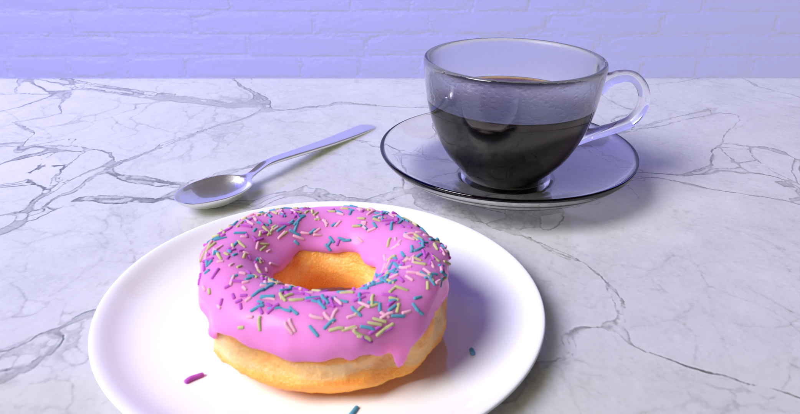
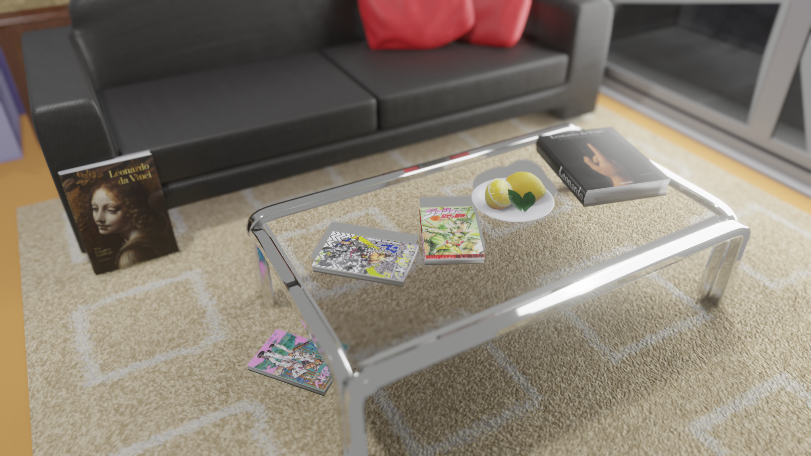
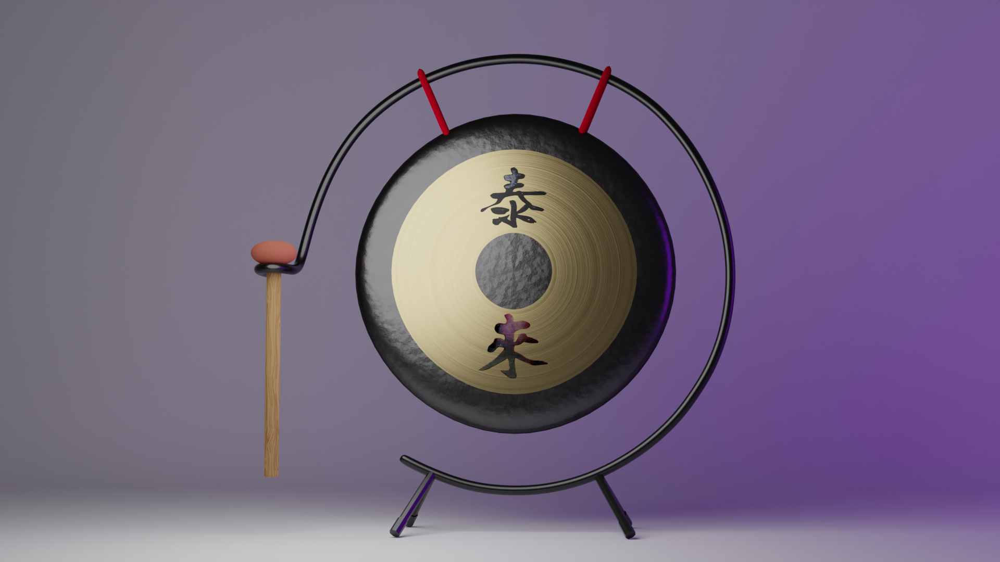
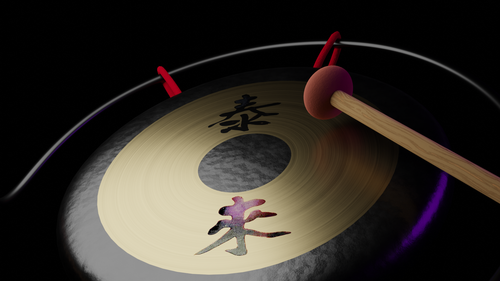
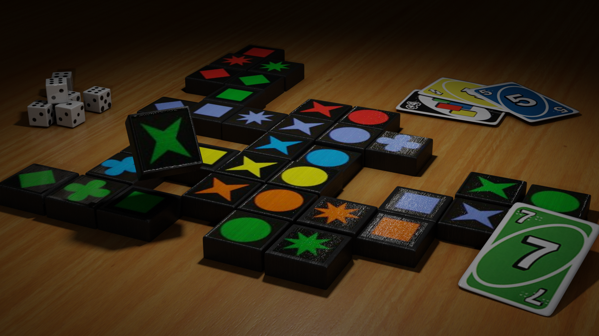
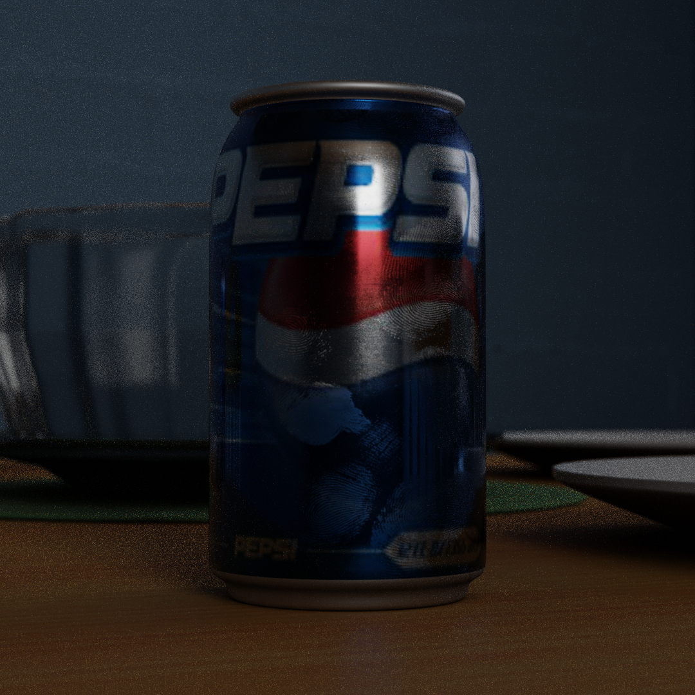
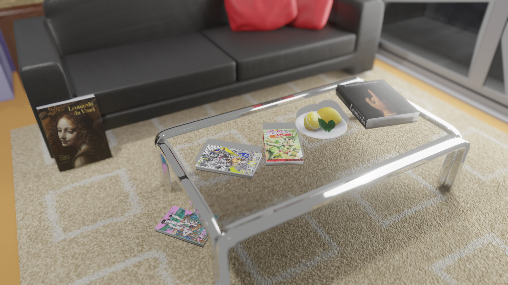
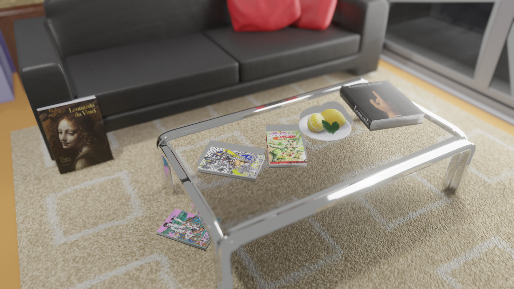
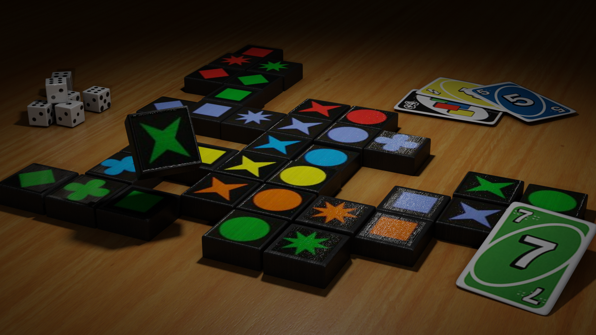
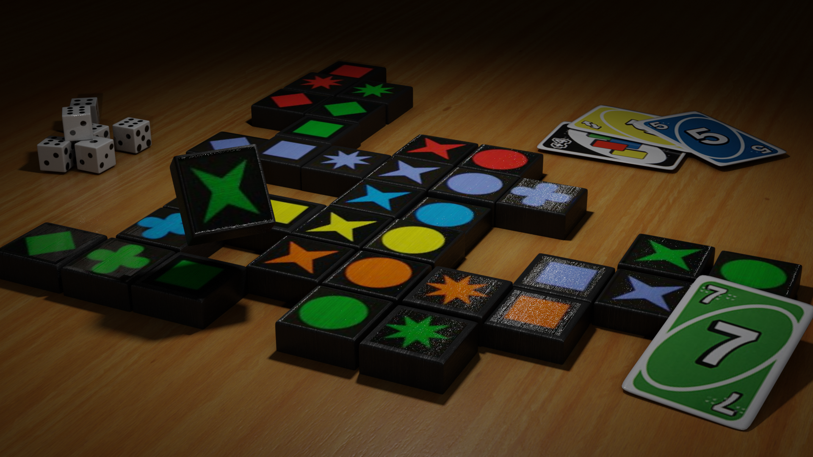

For anyone learning to use Blender, you have no doubt come accross Blender Guru and his infamous donut tutorial. In fact, that's where I started my 3D modeling hobby myself. So I was quite amused when the first assignment of my Computer Science 462 course was to follow the donut tutorial. Instead of just submitting my original donut I decided to make a completely new donut and render. While I am proud of this donut I would probably go with long sprinkes again if I had the time. This render has a ton of CRT screens, I hadn't yet gotten the chance to use my screen shader that emmulates the RGB display, So in this render I used them a lot. I also added screenshots of the Blender Guru tutorial, my original donut render, and my favorite painting. The overall setup here is very strange, with some sort of tiled floor surrounded by a bunch of out-dated CRT tvs, but logic doesn't really need to apply when making virtual environments. This is my first render of 2024, in August... Its been a busy year.

This is my original donut and my first ever Blender render from 2021. You can see it included on the CRT screen in the new render. I think my old donut looks much more delicious if they were real and I had to pick between the two.
Kira Apartment

This is based on a setting from Jojo's Bizarre Adventure part 8. I wanted to try modeling a scene based on limited detail shots from the manga. There are some minor mistakes, but I am still happy with the presentation and some of the models. The lemons on the table are sourced from another one of my projects and every other model I made for this scene. The carpet texture was obtained from the site Poligon and the images on the books from Google searches. The background outside the balcony is my attempt at editing in the actual background from the aforementioned shots from the manga.
Mini Gong


This is a 3D model of a mini gong that I created for the purpose of uploading it to CG trader. My goal was to try and make it low poly but still look good for close renders, while my work could be better in terms of Poly count I am still happy with the result. I used the shader editor for most of the textures, including the rounded grain in the middle and the bumps on the outer ring. The symbols in the middle were replicated by simply taking a picture of the real thing with my phone and adjusting the pictures until a clear alpha between the symbol and the background appeared.
This is a subway environment that I modeled during the pandemic in 2020. Blender was a software that I learned primarily during the pandemic when I had a ton of free time. This scene was my attempt at an eerie or empty feeling scene, something that was possibly influenced by the lockdown. If you look at the pillars in the subway I had put posters warning of COVID-19. The scene was rendered using Eevee, so I had to learn how to bake lighting into scenes. Created alongside this is a cascading animation showing off the length of the terminal however I decided not to host videos on this site. This project was used by me as my senior capstone project in high school. The inclusion of the number 4 is purely because it is my favorite number and i've just noticed for the first time ever while writing this that one of the 4s is backwards. Oops.
Studio Apartment
The reason I made this scene is that I had three models in mind that I wanted to try and create. The first is the computer monitors, I thought it would be easy to use an image texture and give it light to emulate a lit up screen. Second was the rainy window. I am a huge fan of rain and all the scenes I had created before this feature a bright blue sky using HDRIs. The rain effect was created using a picture of raindrops on a surface as a normal map, the effect of the texture of the window caused the buildings in the background to warp slightly which is something I could not solve. Third is the plants, I used shader nodes to make the leaves all different shades and distribute them down a very simple 'vine' model. The keyboard took a very long time to model and I just used simply image textures on each key to get the effect, I should have used a normal map for the shape, but it looks good close up like this. Some of the other models were created as part of different projects including the cans and guitar and the rest were made very quickly by me with very little care. The picture on the wall is my favorite painting 'city lights' by Flooko, permission was granted for use in this scene.
This is a render of ominous looking cans of beans. I was experimenting with post effects I had these cans of bean models already ready to go.

This is a model of the game Quirkle, which my family was addicted to at the time of this model. I thought that it would be easy to find images of the pieces online and put them on simple models. One thing you might be able to notice is that some of the models are floating in the second image by mistake.

This is a close up of the Pepsi cans from the studio apartment scene. They were originally created for the scene where it is pictured here, but it was the only remarkable thing to come out of it. The rest of the scene is so unremarkable its not worth putting here just like a great many of other renders. The thing I am proud of in particular is the texture of the can, particularly the fingerprints.
These candles were made by following a YouTube tutorial, but I light the composition of the scene and the final product. There are some issues I was having with my subsurface scattering that I still haven't solved, but it can be seen here slightly with the noise on the bases of the candles. The background and plate are original.
Vintage doctor pepper cup that my mom used to use to drink diet doctor pepper (unsurprisingly). I wanted to try my hand at making something look worn. Sadly the cup has since broken, so this render remains its only commemoration.
Coins and Legos I guess, I found a Skyrim coin texture from the actual game and made a load of them. I was trying to use normal maps to make Legos too.
In high school I took 3 years of drafting classes. Consistently screws were a massive thorn in my side. Then, I might ask myself why would I return and try and make screws during the pandemic when I have been freed from their wrath for the first time in 2 and half years? Truly a mystery. I suppose I missed the challenge.
Environments
Environments over the years. Particularly fond of the grass one.
Extras
This is a texture of a man's head on a cube with eyeballs.

 



 
